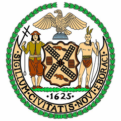

On November 6, 1894, voters in a combined 8 counties, cities and towns were asked whether they were for or against consolidating into one city. Pick your county first, pick your ballot, and see how that place and everyone else voted. The map shows every place on the ballot, how it voted and whether it ended up in Greater New York.
Without it, your vote can’t be recorded.
In 1894 there was no question to read and no oval to fill in. The ballot was a slip of paper printed with one of these two lines. A voter chose a slip and cast it.

The act that made the cityThe 1894 vote was advisory. Only the State Legislature could consolidate the city, and it did: the Greater New York Charter, Chapter 378 of the Laws of 1897, approved May 4, 1897. The charter took effect on January 1, 1898, and that is the day the New York City we know began. Read the act: The Charter of the City of New York, Chapter 378 of the Laws of 1897 (HathiTrust) or The Greater New York Charter: Constituting Chapter 378 of the Laws of 1897, Also the Supplementary Acts and Constitutional Amendment.
The counties and towns that could have been part of New York City, how each voted, and where each ended up.
The vote was advisory: the State Legislature had put the question on the ballot, and only the Legislature could act on it. Every county voted yes, Brooklyn by 277 votes out of more than 129,000. The Town of Westchester voted no by one vote and the City of Mount Vernon voted no; Mount Vernon stayed out of the new city. The Town of Westchester and parts of East Chester and Pelham were annexed to New York in 1895 and became part of the Bronx. In Queens County, Long Island City, Newtown, Flushing, Jamaica and the Rockaway part of Hempstead became the Borough of Queens; the rest of Hempstead, North Hempstead and Oyster Bay stayed out and became Nassau County in 1899. Greater New York took effect on January 1, 1898.
The ballot: a surviving Staten Island ballot from November 6, 1894, printed “FOR Consolidation.”, in Historic Richmond Town’s collection. Votes by county and town: the official tally released by the State Board of Canvassers on December 14, 1894, as given in City of Greater New York; the Queens County figure is the county total as reported, and town-by-town Queens results have not been found. Places and what became of them: Harry Macy Jr., Before the Five-Borough City, New York Genealogical and Biographical Society; Cameron Gordon, Scale, Scope, Efficiency and Equity in Public Service Provision: How might we analyse the 1898 Consolidation of New York City?, University of Canberra. Map shapes are today's boundaries: the 1894 counties are drawn as today's boroughs, the West and East Bronx are split along today's community districts at about the Bronx River, and the Westchester and Nassau towns are their current lines from the U.S. Census Bureau. They are close to, not the same as, the 1894 lines.